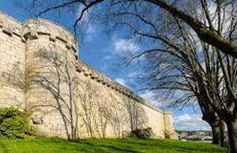
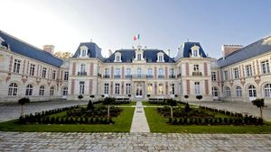
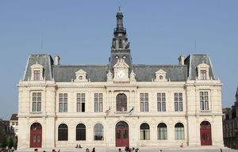
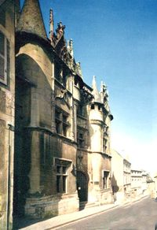
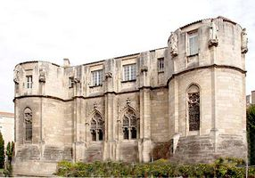
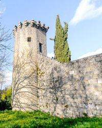
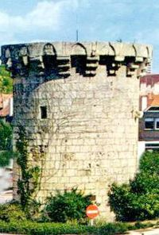
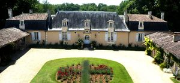
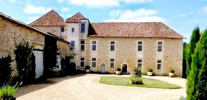

Recensement Jean-Claude Truffet
| Département | 86 — Vienne |
| Canton | Poitiers |
| Commune | Poitiers |
| Type d'édifice | Patrimoines |
| Période d'origine | XII-XIV-XV |









POITIERS, Partir sur les traces d'Aliénor d'Aquitaine, de Radegonde, découvrir l'évolution urbaine de Poitiers a toujours été une ville forte. C'est à l'époque médiévale que Poitiers devient une redoutable place forte. Le château, oeuvre de Philippe Auguste, après 1204, est élevé au confluent de la Boivre et du Clain, ce qui explique le choix d'un plan triangulaire flanqué de trois tours, il est totalement repris par Jean de Berry à la fin du XIVe siècle. Guy de Dammartin le transforme en un somptueux palais. L'édifice est presque totalement détruit. Il ne reste que le premier niveau de la tour nord-ouest, dite du Sanitat, qui appartient par ses critères architecturaux, archères, voûte d'ogives à six branches du XIIIe siècle. Henri II Plantagenêt commence la grande enceinte de 6,5 km qui entoure l'éperon. A son apogée, cette dernière possède soixante à quatre-vingts tours et six portes monumentales au XVIe siècle. Il subsiste le rempart sud-ouest avec la tour à l'Oiseau et la tour de Vouneuil du XIIe siècle, puis à l'ouest la tour Aymar de Beaupuy et la tour du Cordier du XIVe siècle, au nord la tour Bénisson du XIVe siècle et la tour vers Rochereuil de 1507.
POITIERS; Éléments protégés MH : les restes de l'enceinte limités aux parties suivantes : porte de la Tranchée (entrée de la ville), y compris les deux pavillons à gauche et à droite de ladite porte (à gauche, pavillon d'octroi ; à droite, magasins de la pompe à incendie et locaux y attenant) ; anciens murs de clôture de la Promenade de Blossac depuis la porte de la Tranchée jusqu'à la tour dite à l'oiseau inclusivement ; le front de la Tranchée depuis les ateliers Proux jusqu'à la tour à Prieur ou tour Achard qui pointe vers la Boivre, tour comprise ; les trois tours de l'ancien château, au confluent de la Boivre et du Clain ; les douves comprises entre l'usine Savale et la porte Achard : classement par arrêté du 11 janvier 1921. La tour Aymard de Beaupuy sise près de l'ancien moulin du Pont-Achard sur la Boivre : inscription par arrêté du 18 mai 1926. Les châteaux représentés sont de construction classiques du XVII-XVIIIe siècle. Edifié entre 1869 et 1875, lhôtel de ville de Poitiers est le point final dun vaste projet durbanisation du centre-ville. Avec sa majestueuse façade de style néo-renaissance, lédifice est un monument majeur représentatif des goûts du second Empire. A lintérieur, lescalier dhonneur met en scène lascension du visiteur vers la loggia. Ancien palais des comtes de Poitou-ducs dAquitaine, le palais de Justice de Poitiers est un témoignage du style architectural appelé « gothique angevin ». La grande salle d'apparat dite « salle des Pas Perdus » est réédifiée par la famille Plantagenêt un peu avant 1200. Elle demeure aujourd'hui l'un des plus remarquables exemples d'architecture civile médiévale en France.
Jean de Berry et Guy de Dammartin
"
Poitiers,Remparts grav-1. Hotel de ville- préfecture grav 2-3. Palais de justice 46° 34' 59" nord, 0° 20' 32" est. Hotel fleury grav 4 Palais des comtes grav-5 Tour de Vouneil grav 6, Tour Cordier grav 7. Vaumoret grav-8 .